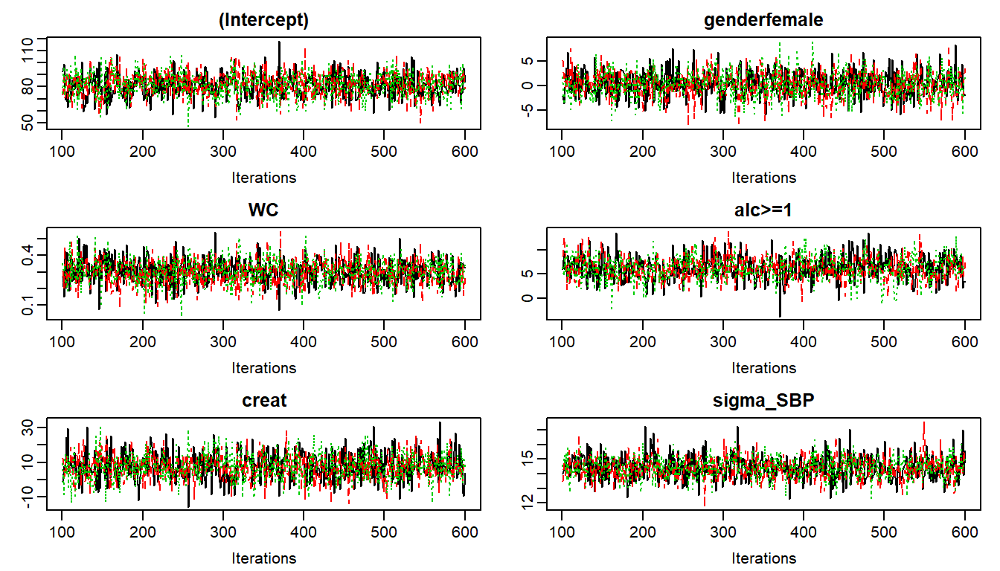
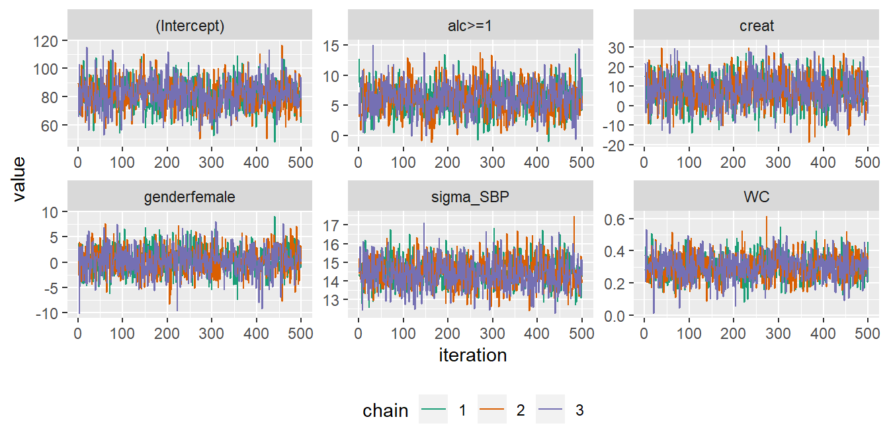
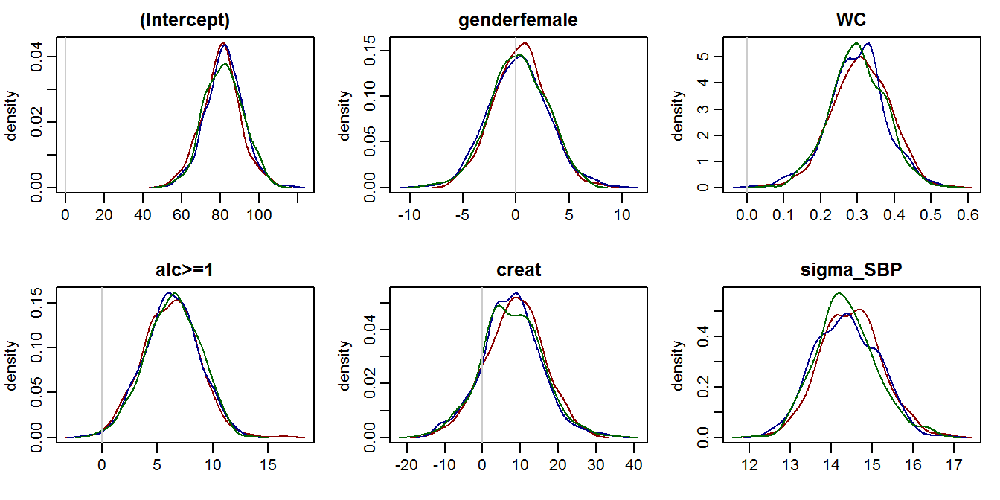
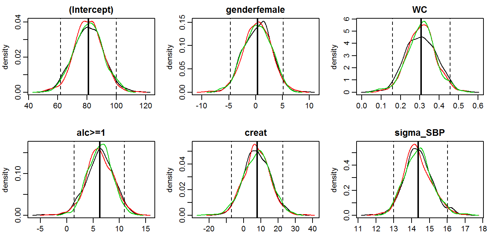
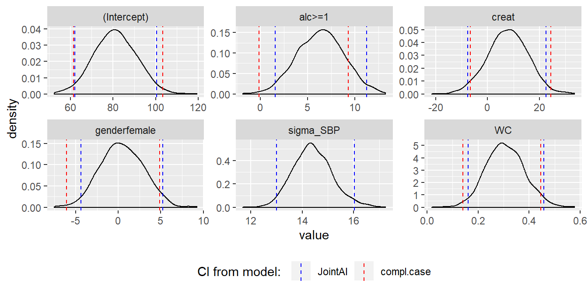
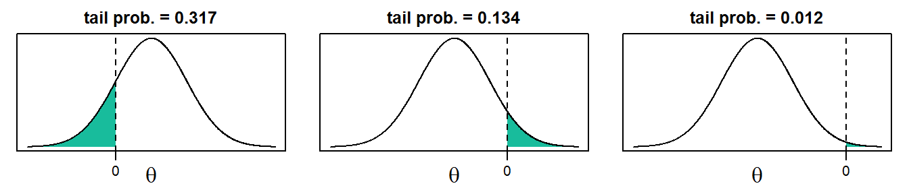
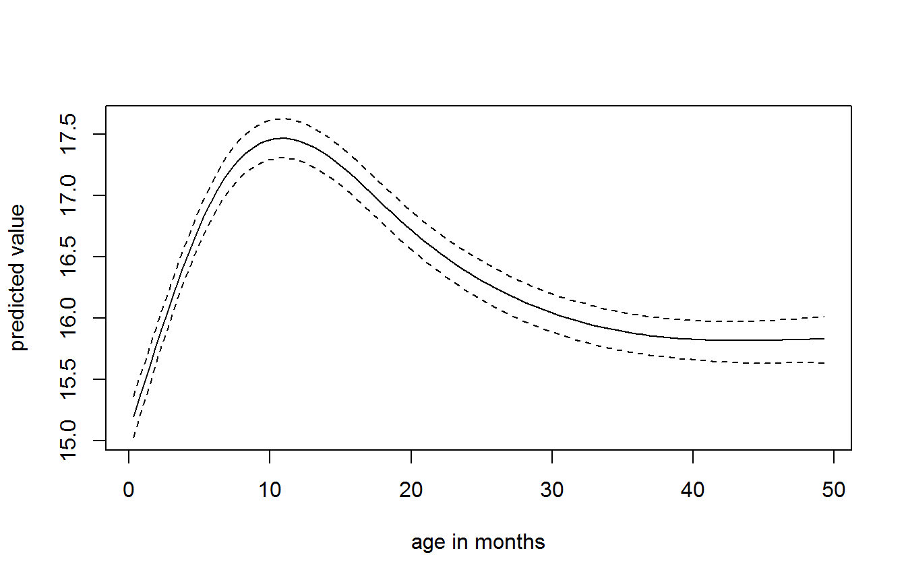
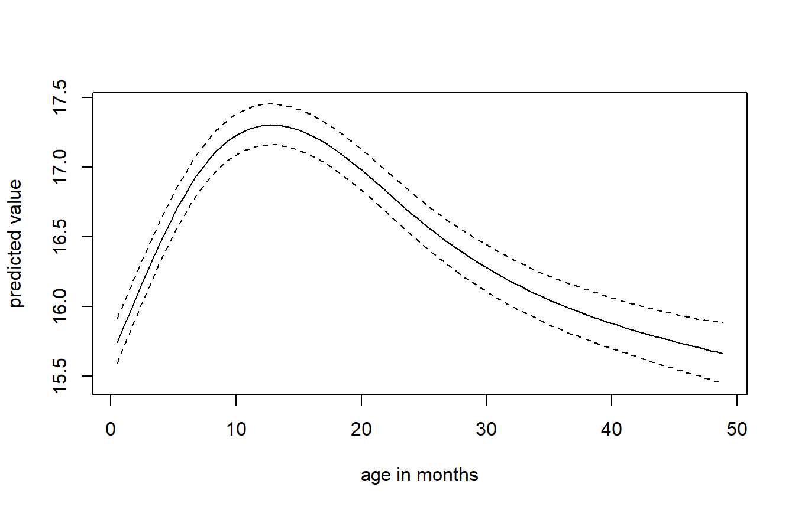

After Fitting
Summary, visualization and evaluation of the results
Nicole Erler
2019-03-08
AfterFitting.RmdThis vignette describes how the results from a JointAI model can be visualized, summarized and evaluated. We use the NHANES data for examples in cross-sectional data and the dataset simLong for examples in longitudinal data. For more info on these datasets, check out the vignette Visualizing Incomplete Data, in which the distributions of variables and missing values in both sets is explored.
The functions described in this section use, by default, the full MCMC sample and show only the parameters of the analysis model. Arguments start, end and thin are available to select a subset of the MCMC samples that is used to calculate the summary. The argument subset allows to control which part of the MCMC sample is returned and follows the same logic as the argument monitor_params in *_imp(). The use of these arguments is further explained below.
Visualizing the posterior sample
The posterior sample can be visualized by two commonly used plots: a traceplot, showing samples across iterations, or a plot of the empirical density of the posterior sample.
Traceplot
A traceplot shows the sampled values per chain and node throughout iterations. It allows to visually evaluate convergence and mixing of the chains, and can be obtained with the function traceplot():

When the sampler has converged the chains show one horizontal band, as in the above figure. Consequently, when traces show a trend convergence has not been reached and more iterations are necessary (e.g., using add_samples()).
Graphical aspects of the traceplot can be controlled by specifying standard graphical arguments via the dots argument "...", which are passed to matplot(). This allows to change color, linetype and -width, limits, etc. Arguments nrow and/or ncol can be supplied to set specific numbers of rows and columns for the layout of the grid of plots.
With the argument use_ggplot it is possible to get a ggplot2 version of the traceplot. It can be extended using standard ggplot2 syntax.
library(ggplot2)
traceplot(mod13a, ncol = 3, use_ggplot = TRUE) +
theme(legend.position = 'bottom') +
scale_color_brewer(palette = 'Dark2')
Density plot
The posterior distributions can also be visualized using the function densplot(), which plots the empirical density per node per chain, or combining chains (when joined = TRUE).
The argument vlines takes a list of lists, containing specifications passed to abline, and allows to add (vertical) lines to the plot, e.g., marking zero:
densplot(mod13a, ncol = 3, col = c("darkred", "darkblue", "darkgreen"),
vlines = list(list(v = c(rep(0, nrow(summary(mod13a)$stats) - 1), NA),
col = grey(0.8)))) or marking the posterior mean and 2.5% and 97.5% quantiles:
densplot(mod13a, ncol = 3,
vlines = list(list(v = summary(mod13a)$stats[, "Mean"], lty = 1,
lwd = 2),
list(v = summary(mod13a)$stats[, "2.5%"], lty = 2),
list(v = summary(mod13a)$stats[, "97.5%"], lty = 2)
)
)
Like with traceplot() it is possible to use the ggplot2 version of densplot() when setting use_ggplot = TRUE. Here, vertical lines can be added as additional layers:
# fit the complete-case version of the model
mod13a_cc <- lm(SBP ~ gender + WC + alc + creat, data = NHANES)
# make a dataset containing the quantiles of the posterior sample and confidence
# intervals from the complete case analysis:
quantDF <- rbind(data.frame(variable = rownames(summary(mod13a)$stat),
type = '2.5%',
model = 'JointAI',
value = summary(mod13a)$stat[, c('2.5%')]
),
data.frame(variable = rownames(summary(mod13a)$stat),
type = '97.5%',
model = 'JointAI',
value = summary(mod13a)$stat[, c('97.5%')]
),
data.frame(variable = names(coef(mod13a_cc)),
type = '2.5%',
model = 'cc',
value = confint(mod13a_cc)[, '2.5 %']
),
data.frame(variable = names(coef(mod13a_cc)),
type = '97.5%',
model = 'cc',
value = confint(mod13a_cc)[, '97.5 %']
)
)
# ggplot version, excluding tau_SBP from the plot:
p13a <- densplot(mod13a, ncol = 3, use_ggplot = TRUE, joined = TRUE,
subset = c(analysis_main = TRUE, tau_y = FALSE)) +
theme(legend.position = 'bottom')
# add vertical lines for the:
# - confidence intervals from the compl. case analysis
# - quantiles of the posterior distribution
p13a +
geom_vline(data = quantDF, aes(xintercept = value, color = model), lty = 2) +
scale_color_manual(name = 'CI from model: ',
limits = c('JointAI', 'cc'),
values = c('blue', 'red'),
labels = c('JointAI', 'compl.case'))
Model Summary
A summary of the posterior distribution estimated in a JointAI model can be obtained using the function summary().
The posterior summary consists of the mean, standard deviation and quantiles (by default the 2.5% and 97.5% quantiles) of the MCMC samples from all chains combined, as well as the tail probability (see below) and Gelman-Rubin criterion (see section below).
Additionally, some important characteristics of the MCMC samples on which the summary is based, is given. This includes the range and number of iterations (“Sample size per chain”), thinning interval and number of chains. Furthermore, the number of observations (number of rows in the data) is given.
summary(mod13a)
#>
#> Linear model fitted with JointAI
#>
#> Call:
#> lm_imp(formula = SBP ~ gender + WC + alc + creat, data = NHANES,
#> n.iter = 500)
#>
#> Posterior summary:
#> Mean SD 2.5% 97.5% tail-prob. GR-crit
#> (Intercept) 81.455 10.1591 61.093 101.239 0.00000 1.00
#> genderfemale 0.263 2.6092 -4.673 5.293 0.92400 1.01
#> WC 0.304 0.0751 0.159 0.452 0.00000 1.01
#> alc>=1 6.413 2.4011 1.445 10.858 0.00933 1.01
#> creat 7.626 7.7400 -7.715 22.783 0.32800 1.00
#>
#> Posterior summary of residual std. deviation:
#> Mean SD 2.5% 97.5% GR-crit
#> sigma_SBP 14.4 0.78 12.9 16 1
#>
#>
#> MCMC settings:
#> Iterations = 101:600
#> Sample size per chain = 500
#> Thinning interval = 1
#> Number of chains = 3
#>
#> Number of observations: 186For mixed models, summary() also returns the posterior summary of the random effects covariance matrix D and the number of groups:
library(splines)
mod13b <- lme_imp(bmi ~ GESTBIR + ETHN + HEIGHT_M + ns(age, df = 3),
random = ~ ns(age, df = 3) | ID, data = simLong,
n.iter = 250, no_model = 'age')
#> Warning in rjags::jags.model(file = modelfile, data = data_list, inits = inits, : Unused variable
#> "Xl" in data
summary(mod13b)
#>
#> Linear mixed model fitted with JointAI
#>
#> Call:
#> lme_imp(fixed = bmi ~ GESTBIR + ETHN + HEIGHT_M + ns(age, df = 3),
#> data = simLong, random = ~ns(age, df = 3) | ID, n.iter = 250,
#> no_model = "age")
#>
#> Posterior summary:
#> Mean SD 2.5% 97.5% tail-prob. GR-crit
#> (Intercept) 11.41386 2.1219 7.44803 15.5259 0.000 1.01
#> GESTBIR 0.05888 0.0380 -0.01438 0.1312 0.117 1.02
#> ETHNother 0.26002 0.1270 0.00694 0.5215 0.040 1.01
#> HEIGHT_M 0.00833 0.0083 -0.00759 0.0247 0.325 1.01
#> ns(age, df = 3)1 -0.48809 0.0955 -0.67118 -0.3005 0.000 1.30
#> ns(age, df = 3)2 3.13748 0.1656 2.82118 3.4528 0.000 1.21
#> ns(age, df = 3)3 -0.83371 0.0695 -0.96552 -0.6935 0.000 1.37
#>
#> Posterior summary of random effects covariance matrix:
#> Mean SD 2.5% 97.5% tail-prob. GR-crit
#> D[1,1] 1.850 0.167 1.535 2.192 1.02
#> D[1,2] -0.965 0.148 -1.249 -0.703 0 1.07
#> D[2,2] 1.969 0.251 1.475 2.462 2.77
#> D[1,3] -2.319 0.297 -2.926 -1.767 0 1.03
#> D[2,3] 2.499 0.294 1.947 3.095 0 1.01
#> D[3,3] 7.821 0.704 6.476 9.258 1.05
#> D[1,4] -0.588 0.112 -0.807 -0.365 0 1.16
#> D[2,4] 1.259 0.127 1.023 1.538 0 1.29
#> D[3,4] 1.832 0.248 1.380 2.345 0 1.37
#> D[4,4] 1.040 0.133 0.824 1.334 2.54
#>
#> Posterior summary of residual std. deviation:
#> Mean SD 2.5% 97.5% GR-crit
#> sigma_bmi 0.696 0.0102 0.677 0.716 1.09
#>
#>
#> MCMC settings:
#> Iterations = 101:350
#> Sample size per chain = 250
#> Thinning interval = 1
#> Number of chains = 3
#>
#> Number of observations: 3894
#> Number of groups: 499Tail probability
The tail probability, calculated as \(2\times\min\left\{Pr(\theta > 0), Pr(\theta < 0)\right\},\) where \(\theta\) is the parameter of interest, is a measure of how likely the value 0 is under the estimated posterior distribution. The figure visualizes three examples of posterior distributions and the corresponding minimum of \(Pr(\theta > 0)\) and \(Pr(\theta < 0)\) (shaded area): 
By default, summary() will only print the posterior summary for the main model parameters of the analysis model and use the whole MCMC sample. The argument subset allows to control which part of the MCMC sample is returned and follows the same logic as the argument monitor_params in *_imp(). Arguments start, end and thin are available to select a subset of the MCMC samples that is used to calculate the summary. The use of these arguments is further explained below).
Evaluation criteria
Convergence of the MCMC chains and precision of the posterior sample can also be evaluated in a more formal manner. Implemented in JointAI are the Gelman-Rubin criterion for convergence1 and a comparison of the Monte Carlo Error with the posterior standard deviation.
Gelman-Rubin criterion for convergence
The Gelman-Rubin criterion evaluates convergence by comparing within and between chain variability and, thus, requires at least two MCMC chains to be calculated. It is implemented for JointAI objects in the function GR_crit(), which is based on the function gelman.diag() from the package coda. The upper limit of the confidence interval should not be much larger than 1.
GR_crit(mod13a)
#> Potential scale reduction factors:
#>
#> Point est. Upper C.I.
#> (Intercept) 1.001 1.00
#> genderfemale 1.002 1.01
#> WC 1.004 1.01
#> alc>=1 1.002 1.01
#> creat 1.000 1.00
#> sigma_SBP 0.999 1.00
#>
#> Multivariate psrf
#>
#> 1.01Besides the arguments start, end, thin, and subset, which are explained below, GR_crit() also takes the arguments of gelman.diag().
Monte Carlo Error
Precision of the MCMC sample can be checked with the function MC_error(). It uses the function mcmcse.mat() from the package mcmcse to calculate the Monte Carlo error (the error that is made since the sample is finite) and compares is to the standard deviation of the posterior sample. A rule of thumb is that the Monte Carlo error should not be more than 5% of the standard deviation2. Besides the arguments explained below, MC_error() takes the arguments of mcmcse.mat().
MC_error(mod13a)
#> est MCSE SD MCSE/SD
#> (Intercept) 81.46 0.2034 10.159 0.020
#> genderfemale 0.26 0.0716 2.609 0.027
#> WC 0.30 0.0021 0.075 0.028
#> alc>=1 6.41 0.0648 2.401 0.027
#> creat 7.63 0.1862 7.740 0.024
#> sigma_SBP 14.41 0.0237 0.780 0.030MC_error() returns an object of class MCElist, which is a list containing matrices with the posterior mean, estimated Monte Carlo error, posterior standard deviation and the ratio of the Monte Carlo error to the posterior standard deviation, for the scaled (if they are part of the JointAI object) and unscaled (transformed back to the scale of the data) posterior samples. The associated print method prints only the latter.
To facilitate quick evaluation of the Monte Carlo error to posterior standard deviation ratio, plotting of an object of class MCElist using plot() shows this ratio for each (selected) node and automatically adds a vertical line at the desired cut-off (by default 5%).
par(mar = c(3, 5, 0.5, 0.5), mgp = c(2, 0.6, 0), mfrow = c(1, 2))
plot(MC_error(mod13a)) # left panel: all iterations 101:600
plot(MC_error(mod13a, end = 250)) # right panel: iterations 101:250
Subset of output
By default, the functions traceplot(), densplot(), summary(), GR_crit() and MC_Error() use all iterations of the MCMC sample and consider only the parameters of the analysis model (if they were monitored). In this section we describe how the set of iterations and parameters to display can be changed using the arguments subset, start, end and thin.
Subset of parameters
As long as the main parameters have been monitored in a JointAI object, only these parameters are returned in the model summary, plots and criteria shown above. When the main parameters of the analysis model were not monitored, i.e., monitor_params = c(analysis_main = FALSE), and the argument subset is not specified, all parameters that were monitored are displayed.
To display output for nodes other than the main parameters of the analysis model or for a subset of nodes, the argument subset needs to be specified.
Examples
To display only the parameters of the imputation models, we set subset = c(analysis_main = FALSE, imp_pars = TRUE) (after re-estimating the model with the monitor for these parameters switched on):
mod13c <- update(mod13a, monitor_params = c(imp_pars = TRUE))
summary(mod13c, subset = c(analysis_main = FALSE, imp_pars = TRUE))
#>
#> Linear model fitted with JointAI
#>
#> Call:
#> lm_imp(formula = SBP ~ gender + WC + alc + creat, data = NHANES,
#> n.iter = 500, monitor_params = c(imp_pars = TRUE))
#>
#> Posterior summary:
#> Mean SD 2.5% 97.5% tail-prob. GR-crit
#> alpha[1] 0.1687 0.0987 -0.0245 0.3665 0.0880 1.01
#> alpha[2] -0.3563 0.1490 -0.6577 -0.0853 0.0187 1.00
#> alpha[3] 0.4903 0.0891 0.3183 0.6690 0.0000 1.00
#> alpha[4] -1.0421 0.1296 -1.2921 -0.7954 0.0000 1.01
#> alpha[5] 0.0754 0.0685 -0.0627 0.2087 0.2493 1.01
#> alpha[6] -0.1051 0.2422 -0.6049 0.3507 0.6680 1.04
#> alpha[7] -0.9463 0.4228 -1.7669 -0.0963 0.0280 1.10
#> alpha[8] 0.0926 0.1676 -0.2278 0.4304 0.5853 1.03
#> alpha[9] -0.2744 0.2091 -0.6683 0.1527 0.1973 1.04
#> tau_WC 1.0286 0.1102 0.8282 1.2526 0.0000 1.01
#> tau_creat 1.3946 0.1493 1.1338 1.7021 0.0000 1.01
#>
#>
#> MCMC settings:
#> Iterations = 101:600
#> Sample size per chain = 500
#> Thinning interval = 1
#> Number of chains = 3
#>
#> Number of observations: 186To select only some of the parameters, they can be specified directly by name via the other element of subset.
This also works when a subset of the imputed values should be displayed:
# re-fit the model and monitor the imputed values
mod13d <- update(mod13a, monitor_params = c(imps = TRUE))
# select all imputed values for 'WC' (3rd column of Xc)
sub3 <- grep('Xc\\[[[:digit:]]+,3\\]', parameters(mod13d), value = TRUE)
sub3
#> [1] "Xc[33,3]" "Xc[150,3]"
# pass "sub3" to "subset" via "other", for example in a traceplot:
# traceplot(mod13d, subset = list(other = sub3), ncol = 2)When the number of imputed values is large or in order to check convergence of random effects, it may not be feasible to plot and inspect all traceplots. In that case a random subset of, for instance the random effects, can be selected (output not shown):
# re-fit the model monitoring the random effects
mod13e <- update(mod13b, monitor_params = c(ranef = TRUE))
# extract random intercepts and random slopes
ri <- grep('^b\\[[[:digit:]]+,1\\]$', colnames(mod13e$MCMC[[1]]), value = T)
rs <- grep('^b\\[[[:digit:]]+,2\\]$', colnames(mod13e$MCMC[[1]]), value = T)
# to plot the chains of 12 randomly selected random intercepts and slopes:
traceplot(mod13e, subset = list(other = sample(ri, size = 12)), ncol = 4)
traceplot(mod13e, subset = list(other = sample(rs, size = 12)), ncol = 4)Subset of MCMC samples
With the arguments start, end and thin it is possible to select which iterations from the MCMC sample are included in the summary. start and end specify the first and last iterations to be used, thin the thinning interval. Specification of start, thus, allows to discard a “burn-in”, i.e., the iterations before the MCMC chain had converged.
Predicted values
Often, the aim of an analysis is not only to estimate the association between outcome and covariates, but to predict future outcomes or outcomes for new subjects.
The function predict() allows to obtain predicted values and corresponding prediction intervals from JointAI objects. Note that for mixed models, currently, only marginal prediction but not prediction conditional on the random effects is implemented.
A dataset containing data which the prediction should be performed is specified via the argument newdata. The argument quantiles allows to specify the quantiles of the posterior sample that are used to obtain the prediction interval (by default the 2.5% and 97.5% quantile). Arguments start, end and thin control the subset of MCMC samples used.
predict(mod13a, newdata = NHANES[27, ])
#> $dat
#> SBP gender age race WC alc educ creat albu
#> 392 126.6667 male 32 Mexican American 94.1 <1 low 0.83 4.2
#> uricacid bili occup smoke fit 2.5% 97.5%
#> 392 8.7 1 <NA> former 116.3825 112.5285 120.4179
#>
#> $fit
#> [1] 116.3825
#>
#> $quantiles
#> [,1]
#> 2.5% 112.5285
#> 97.5% 120.4179predict() returns a list with elements dat, fit and quantiles, containing newdata with the predicted values and quantiles appended, the predicted values and quantiles that form the prediction interval.
Prediction to visualize non-linear effects
Another reason to obtain predicted values is the visualization of non-linear effects. To facilitate the generation of a dataset for such a prediction, the function predDF() can be used. It generates a data.frame that contains a sequence of values through the range of observed values for a covariate specified by the argument var, and the median or reference value for all other continuous and categorical variables.
# create dataset for prediction
newDF <- predDF(mod13b, var = "age")
# obtain predicted values
pred <- predict(mod13b, newdata = newDF)
# plot predicted values and prediction interval
matplot(pred$dat$age, pred$dat[, c('fit', '2.5%', '97.5%')],
lty = c(1,2,2), type = 'l', col = 1,
xlab = 'age in months', ylab = 'predicted value')
Export of imputed values
Imputed datasets can be extracted from a JointAI object (in which a monitor for the imputed values has been set, i.e., monitor_params = c(imps = TRUE)), with the function get_MIdat().
A completed dataset is created by taking the imputed values from a randomly chosen iteration of the MCMC sample, transforming them back to the original scale if scaling had been performed before the MCMC sampling, and filling them into the original incomplete data.
The argument m specifies the number of imputed datasets to be created, include controls whether the original data are included in the long format data.frame (default is include = TRUE), start specifies the first iteration that may be used and minspace is the minimum number of iterations between iterations eligible to be selected.
To make the selection of iterations to form the imputed data reproducible, a seed value can be specified via the argument seed.
When export_to_SPSS = TRUE the imputed data is exported to SPSS, i.e., a .txt file containing the data and a .sps file containing SPSS syntax to convert the data into an SPSS data file (with ending .sav) are written. Arguments filename and resdir allow to specify the name of the .txt and .sps file and the directory they are written to.
get_MIdat() returns a long-format data.frame containing the imputed datasets (and by default the original data) stacked onto each other. The imputation number is given in the variable Imputation_, column .id contains a newly created id variable for each observation in cross-sectional data (multi-level data should already contain an id variable).
The function plot_imp_distr() allows to visually compare the distribution of the observed and imputed values.

Gelman, A. and Rubin, D.B. (1992). Inference from Iterative Simulation Using Multiple Sequences. Statistical Science 7(4), 457-472. doi: 10.1214/ss/1177011136.
Brooks, S. P. and Gelman, A. (1998). General Methods for Monitoring Convergence of Iterative Simulations. Journal of Computational and Graphical Statistics 7(4), 434 - 455. doi: 10.1080/10618600.1998.10474787.↩Lesaffre, E. M. and A. B. Lawson (2012). Bayesian Biostatistics. John Wiley & Sons. doi: 10.1002/9781119942412.↩